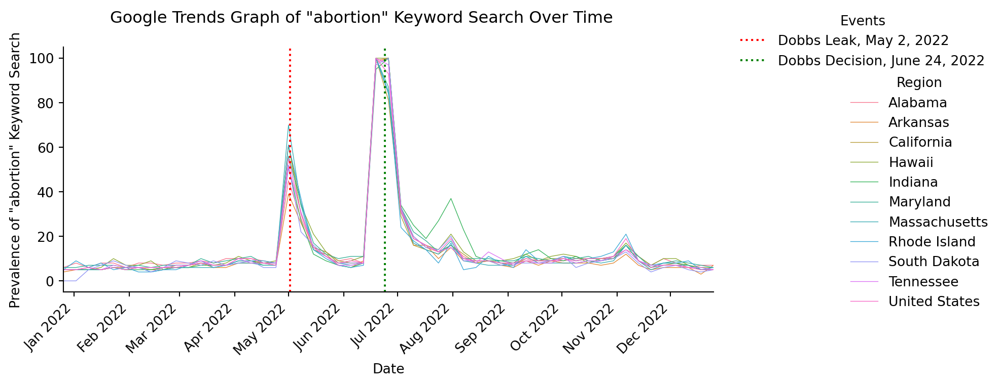
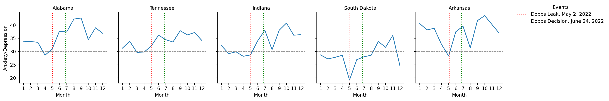
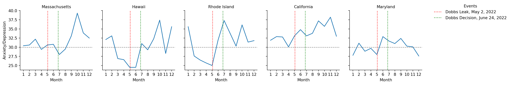
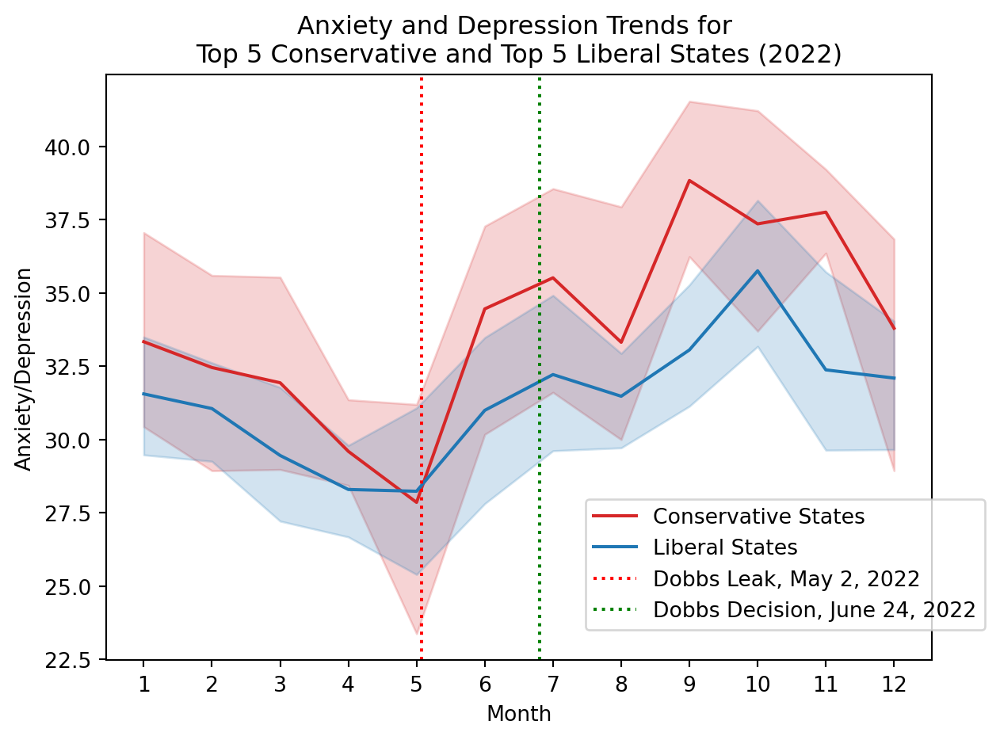
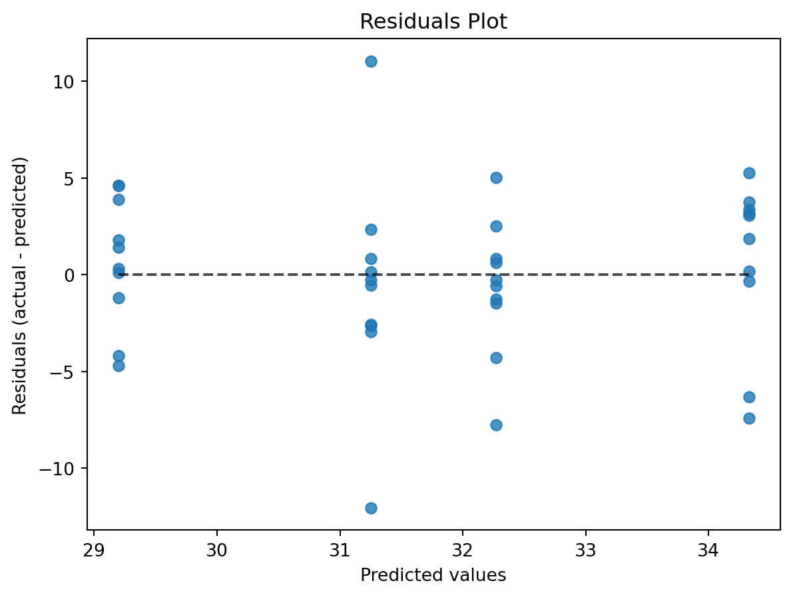
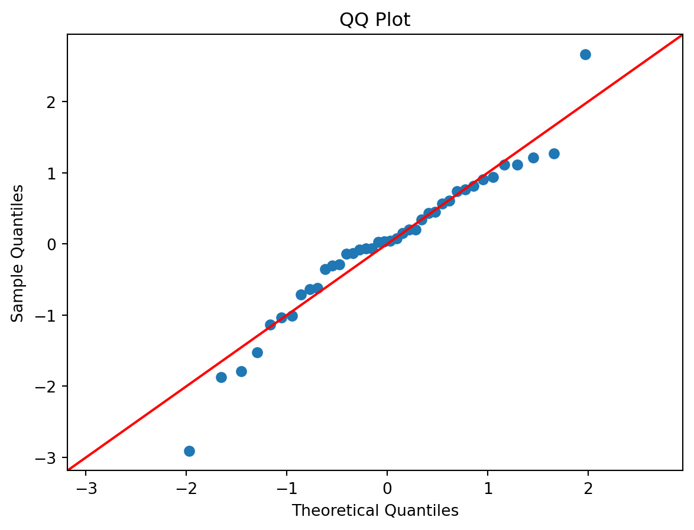
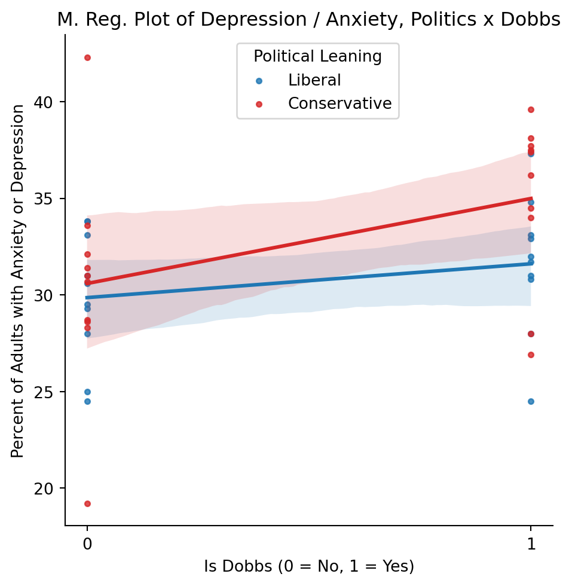

| Date | Event | Source |
|---|---|---|
| Feb. 24 | Russia invades Ukraine | Latour and Crisp (2022) |
| May 2 | Dobbs decision leaked | Gerstein (2022) |
| Jun. 24 | Dobbs decision released | Latour and Crisp (2022) |
| Aug. 4 | U.S. declares monkeypox emergency | Bullock et al. (n.d.) |
| Aug. 8 | Mar-a-Lago Raid | Latour and Crisp (2022) |
| Oct. | Russia nuclear weapon rhetoric spike | Perplexity AI (2025a) |
| Nov. 9 | Midterm Elections | Latour and Crisp (2022) |
Red State, Blue State, Mental State
The Psychological Impact of Dobbs v. Jackson on Americans Across the Political Divide
Introduction and Background
Throughout American history, the Supreme Court has played a key role in shaping legal precedent, with far-ranging consequences for Americans. The Court has affirmed hard-won human rights, such as same-sex marriage in Obergefell v. Hodges (Fredrickson & Wurman, n.d.), and has also handed down decisions denying rights such as citizenship of a freed slave in Dredd Scott v. Sandford (History.com Editors, 2009). Many of the Court’s decisions have a real and immediate impact on the American public. The Dredd Scott decision, for example, created immense public outrage, and is seen as one of the key events leading up to the American Civil War (History.com Editors, 2009). As such, it is reasonable to infer that any major Supreme Court decision may induce anxiety and stress in adults.
In 2022, the Supreme Court ruled on another landmark case, Dobbs v. Jackson, that overturned five decades of precedent established by Roe v. Wade, putting the question of legal abortion to the States (Palacio, 2023). According to the Kaiser Family Foundation (2025), access to abortion varies by state and exists on a continuum ranging from a total ban to no gestational limits. Given this spectrum of access, it is reasonable to infer that anxiety and depressive symptoms may have been heightened in states where abortion was banned compared to states with fewer restrictions.
Access to abortion is generally understood as varying by political philosophy. According to a Pew Research Center poll (2025), party affiliation dramatically affects views on abortion, with 57% of Republicans responding that “abortion should be illegal [emphasis added] in all / most cases” and 85% of Democrats maintaining that “abortion should be legal [emphasis added] in all / most cases.” Given this political split, it is likely that the Dobbs v. Jackson decision impacted anxiety rates differently in the most conservative states versus the least conservative states.
The present analysis aims to understand whether levels of anxiety and depression differed for adults living in the top 5 most conservative (conservative) vs. the top 5 least conservative (liberal) states during and after the Dobbs decision, and especially in the wake of related legal restrictions on reproductive rights. To assess this relationship, we will compare anxiety / depression scores in conservative states to liberal states, whose abortion restrictions range from abortion ban (most conservative) to low or no restriction (least conservative) during three times: Before Dobbs, During Dobbs and After Dobbs. We hypothesize that anxiety and depression levels in more conservative states will differ from those in less conservative states during the leak and the decision, but approximately the same before and after.
Analysis of Other Potential Causes of Anxiety and Depression
To ensure there were no confounding events, we explored major events at both the national (Table 1) and state levels (Table 2) in and around the periods of interest and concluded that no significant events co-occurred with the Dobbs decision. Thus, the states we chose differ in level of access to abortion (e.g., either low restrictions or total ban), while unrelated issues (e.g., cost of living, crime) would be normative in each state and unlikely to covary with abortion as a predictor of anxiety and depression symptoms.
Table 1: Major Events in the U.S. in 2022
Table 2: Major Events by State in 2022 (Bullock et al., n.d.)
| State | Date | Event |
|---|---|---|
| Alabama | N.A. | |
| Arkansas | N.A. | |
| California | May 23 | State threatens mandatory water restrictions owing to drought |
| — | Jul. 1 | CNN reports Cal. man with monkeypox diagnosis urging people to get vaccinated |
| — | Jul. 24 | Oak Fire reported to have burned 12,000 acres in California |
| — | Jul. 27 | Case of monkeypox reported in an infant |
| — | Aug. 4 | Kaiser Foundation reports on a case of monkeypox diagnosis |
| — | Aug. 5 | Monkeypox guidance reported by LA Times |
| Hawaii | N.A. | |
| Indiana | Jul. 28 | Monkeypox cases reported to include women and children |
| Maryland | N.A. | |
| Massachusetts | N.A. | |
| Rhode Island | N.A. | |
| S. Dakota | N.A. | |
| Tennessee | Jun. 13 | Nashville Electric asks consumers to conserve electricity during heat wave |
Note: Reporting of major events by state on or around the periods of interest. N.A. indicates no events reported from this source.
For a more comprehensive list of national events, see Perplexity AI (2025a, 2025b).
Method
Python Packages
To clean and analyze the data for this project, we used Python (Python Software Foundation, 2025), along with the following packages: IPython (Perez & Granger, 2007), Matplotlib (Hunter, 2007), Numpy (Harris et al., 2020), Pandas (The Pandas Development Team, 2020), Pytrends (Hogue & Burton, 2023), Scipy (Virtanen et al., 2020), Seaborn (Waskom, 2021), Sklearn (Buitinck et al., 2013), Statsmodels (Seabold & Perktold, 2010), and Tabulate (Astanin, 2022).
Datasets & Measures
CDC Household Pulse Survey
We analyzed data from the Centers for Disease Control and Prevention bi-weekly report on anxiety and depressive symptoms (2023). Survey data was made available by the Computer and Information Sciences Department at Willamette University.
The CDC compiled this dataset from responses to the Household Pulse Survey. To measure depressive symptoms, the CDC used a modified two-item Patient Health Questionnaire scale (National Center for Health Statistics, 2025). To measure anxiety symptoms, the CDC used a modified two-item Generalized Anxiety Disorder scale (National Center for Health Statistics, 2025). The resulting value represents the percentage of adults with anxiety and/or depressive symptoms exceeding a certain threshold.
The CDC dataset contains three types of indicators:
- Symptoms of Anxiety Disorder
- Symptoms of Depressive Disorder
- Symptoms of Anxiety Disorder or Depressive Disorder
For the purposes of our analysis, the response variable we chose was Symptoms of Anxiety Disorder or Depressive Disorder, which is the percentage of adults who exceeded the measure threshold for symptomatic expression of anxiety or depression. This value gives us a more robust understanding of the effects of the Dobbs decision on the target populations than either anxiety or depression would alone.
Missingness
The CDC dataset shows the percentage of adults reporting anxious and/or depressive symptoms during specific time periods, with data aggregated by group and subgroup (e.g., state of residence, gender identity, age group, etc.). Missingness occurred across various groups and subgroups, and was correlated only with the time period. For all time periods, anxiety/depression data was either not missing at all, or was completely missing, with no independent variable (such as age, state, etc.) accounting for missingness. As such, we concluded that the pattern of missingness is Missing Completely At Random (MCAR) and discarded rows with missing values during the cleaning step.
Google Search Trends
To supplement our analysis, we collected keyword search data from Google Trends. We queried Google search data for the keyword “abortion,” both nationwide and for the states listed under State Political Leanings. This data was collected on November 8, 2025, and includes the period from January 1, 2022 to December 31, 2022 (Google Trends, n.d.-a, n.d.-b, n.d.-c, n.d.-d, n.d.-e, n.d.-f, n.d.-g, n.d.-h, n.d.-i, n.d.-j, n.d.-k).
Abortion Restrictions
We obtained abortion restriction data from The Kaiser Family Foundation, a non-profit organization that provides non-partisan health policy assessments (2025). Abortion restrictions are significant to this analysis because they form the nexus between state political leanings and the impact of Dobbs v. Jackson on anxiety and depression within the respective states, as described below.
State Political Leanings
State political leaning information obtained from a non-partisan newspaper, The Hill, in an article that ranked state legislatures from most to least conservative (Dress, 2022). We selected states listed in the top 5 most conservative (conservative) and the top 5 least conservative (liberal) as reported on December 6, 2022 (Table 3).
Table 3: Political Leaning by State
| Conservative | Liberal |
|---|---|
| Alabama | Massachusetts |
| Tennessee | Hawaii |
| Indiana | Rhode Island |
| South Dakota | California |
| Arkansas | Maryland |
Each state in the conservative group was confirmed to have “banned” abortion, while each state in the liberal group was confirmed to allow abortion “near viability” or “no gestational limit” (Kaiser Family Foundation, 2025). States are organized in descending order from most conservative and liberal, respectively.
Procedure
Search Trends Analysis
We used the Google Search Trends data to corroborate the periods of time during which abortion was top of mind in the states of interest. The Trends data shows a spike in abortion-related search queries in both conservative and liberal states during the periods of interest. As expected, searches for “abortion” spiked during the leak and the release of the Dobbs decision (Fig. 1.).
Fig. 1. Google Search Trends Plot
Show code
# Sort regions alphabetically to display in legend
sorted_categories = sorted(trends['Region'].unique())
trends['Region'] = pd.Categorical(trends['Region'], categories=sorted_categories, ordered=True)
# Create the Seaborn line plot with faceting
g = sns.relplot(
data=trends,
x='date',
y='abortion',
hue = 'Region',
kind='line',
height=4,
aspect=1.5,
linewidth = 0.5
)
# Iterate through each subplot to customize x-axis
for ax in g.axes.flat:
# Set x-axis limits based on min/max of data
min_date = trends['date'].min()
max_date = trends['date'].max()
ax.set_xlim(min_date, max_date)
# Format x-axis to show only month and year
ax.xaxis.set_major_formatter(mdates.DateFormatter('%b %Y'))
# Rotate x-axis labels by 45 degrees
for label in ax.get_xticklabels():
label.set_rotation(45)
label.set_horizontalalignment('right')
# Specify the dates for the vertical lines
date1 = pd.to_datetime('2022-05-02') # May 2, 2022
date2 = pd.to_datetime('2022-06-24') # June 24, 2022
# Add the vertical lines to the last active axis ('ax' from the loop)
line1 = ax.axvline(
x=date1,
color='red',
linestyle=':',
label=f'Event 1: {date1.strftime("%Y-%m-%d")}')
line2 = ax.axvline(
x=date2,
color='green',
linestyle=':',
label=f'Event 2: {date2.strftime("%Y-%m-%d")}')
# Clear any existing seaborn legends from the axes first
for ax in g.axes.flat:
if ax.legend_ is not None:
ax.legend_.remove()
# Manually create a legend
# Get the labels for the seaborn plot data (Region names)
seaborn_handles = list(g._legend_data.values())
seaborn_labels = list(g._legend_data.keys())
# Get the labels for the custom vertical lines
custom_handles = [line1, line2]
custom_labels = ['Dobbs Leak, May 2, 2022', 'Dobbs Decision, June 24, 2022']
# Combine all labels into single lists
all_handles = seaborn_handles + custom_handles
all_labels = seaborn_labels + custom_labels
# Add a unified legend to the figure
g.figure.legend(
handles=all_handles,
labels=all_labels,
loc="upper left", # Anchor the upper left of the legend box
bbox_to_anchor=(1, 1), # to the upper right of the figure area
title='Events', # Set the combined legend title
frameon=False # Remove the legend box frame
)
g.set(
xlabel = 'Date',
ylabel = 'Prevalence of "abortion" Keyword Search'
)
g.fig.suptitle('Google Trends Graph of "abortion" Keyword Search Over Time')
g.figure.tight_layout()
plt.show()
Exploratory Data Analysis
The CDC dataset included values of anxiety and depression aggregated by distinct time periods. To identify which period included meaningful data points, we narrowed our search to time periods in relation to the Dobbs v. Jackson decision, which was leaked on May 2, 2022 and released by the Supreme Court on June 24, 2022. To account for variance in anxiety and depressive scores from general issues, we included scores from before and after the Dobbs decision (Table 4). In the course of our exploratory data analysis, we graphed the available data for 2022 grouped by conservative and liberal states (Fig. 2.), then by average score per political leaning (Fig. 3.).
Table 4: Periods of Interest
| Event | Event Date | CDC Data Time Period |
|---|---|---|
| Dobbs Leak | May 2, 2022 | Apr 27 - May 9, 2022 |
| Before Dobbs | Jun 1 - Jun 13, 2022 | |
| Dobbs Decision | Jun 24, 2022 | Jun 29 - Jul 11, 2022 |
| After Dobbs | Jul 27 - Aug 8, 2022 |
Results
Data Analysis and Interpretation
Fig. 2. Plots of Anxiety / Depression Scores by Conservative and Liberal States
Show code
# Create cols for month and year
cdc_data.loc[:, 'year_end'] = cdc_data['time_period_end_date'].dt.year
cdc_data.loc[:, 'month_end'] = cdc_data['time_period_end_date'].dt.month
states = {
'conservative': ['Alabama', 'Tennessee', 'Indiana', 'South Dakota', 'Arkansas'],
'liberal': ['Massachusetts', 'Hawaii', 'Rhode Island', 'California', 'Maryland']
}
dfs = {}
# filter for anxiety OR depressive symptoms
filtered_data = cdc_data[cdc_data['symptoms_of'] == 'Anxiety Disorder or Depressive Disorder']
# group data by subgroup (state), year, and month
grp_state_year_month = filtered_data.groupby(['subgroup', 'year_end', 'month_end'], as_index=False)['value'].mean()
leanings = ['conservative', 'liberal']
# create one FacetGrid for conservative states and one for liberal states
for leaning in leanings:
print(f"Anxiety and Depression in {leaning.title()} States, 2022")
facet_states = states[leaning]
state_data = grp_state_year_month[
(grp_state_year_month['subgroup'].isin(facet_states)) &
(grp_state_year_month['year_end'] == 2022)
].copy()
# record political leaning
state_data.loc[:, 'politics'] = leaning
# save a copy of dataset in dfs dictionary for future charts
dfs[leaning] = state_data.copy()
# FacetGrid of states
g = sns.FacetGrid(
state_data,
col='subgroup',
col_order=facet_states
)
g.map(sns.lineplot, 'month_end', 'value')
g.set(
xticks = np.arange(1,13,1),
xlabel = 'Month',
ylabel = 'Anxiety/Depression'
)
g.set_titles("{col_name}")
for ax in g.axes.flat:
line1 = ax.axvline(x=5.07, color='r', linestyle=':')
line2 = ax.axvline(x=6.8, color='g', linestyle=':')
ax.axhline(y=30, color='grey', linestyle='--', linewidth=1)
# Get the labels for the custom vertical lines
custom_handles = [line1, line2]
custom_labels = ['Dobbs Leak, May 2, 2022', 'Dobbs Decision, June 24, 2022']
# Add a unified legend to the figure
g.figure.legend(
handles=custom_handles,
labels=custom_labels,
loc="upper left",
bbox_to_anchor=(1, 1),
title='Events',
frameon=False
)
plt.show()
print('\n')
all_state_data = pd.concat(dfs.values())Anxiety and Depression in Conservative States, 2022
Anxiety and Depression in Liberal States, 2022
Note: The horizontal line at y = 30 is included to contrast average anxiety and depressive symptoms by political leaning in each group of states. As can be observed, most of the conservative states average scores at or above 30, while most of the liberal states converged around 30. One interpretation of this is that conservatives experience higher rates of anxiety and depressive symptoms independent of events, while liberals experience greater variability in response to events.
Fig. 3. Plot of Average Anxiety / Depression Scores
Show code
palette = {
'conservative': 'tab:red',
'liberal': 'tab:blue'
}
g = sns.lineplot(
all_state_data,
x = 'month_end',
y = 'value',
hue = 'politics',
palette = palette
)
g.set_xticks(np.arange(1,13,1))
plt.xlabel('Month')
plt.ylabel('Anxiety/Depression')
plt.title('Anxiety and Depression Trends for \nTop 5 Conservative and Top 5 Liberal States (2022)')
line1 = g.axvline(
x=5.07,
color='red',
linestyle=':'
)
line2 = g.axvline(
x=6.8,
color='green',
linestyle=':'
)
# manually create a legend
h1, l1 = g.get_legend_handles_labels()
g.legend().remove()
custom_handles = [line1, line2]
custom_labels = ['Dobbs Leak, May 2, 2022', 'Dobbs Decision, June 24, 2022']
# combine all labels into single lists
all_handles = h1 + custom_handles
all_labels = ['Conservative States', 'Liberal States'] + custom_labels
# add a unified legend to the figure
g.figure.legend(
handles = all_handles,
labels = all_labels,
loc = "lower right",
bbox_to_anchor = (0.95, 0.15),
borderaxespad = 0,
title = False,
frameon = True
)
plt.show()
Fig. 3. reveals a strong upward trend in anxiety and depression scores immediately following the Dobbs leak and through the Dobbs decision. We therefore conclude that the peak following the Dobbs Leak represents the effect of the leak, while the following peak represents the effect of the decision.
Multiple Regression
Identification of Variables
Variable 1: Time Period
Given our findings in Fig. 3, we have identified the two peaks between May and July as indicators of the effects of the Dobbs Leak and Dobbs Decision, respectively, on anxiety and depressive symptoms (Table 5).
To construct a linear regression model, we assigned a binary indicator to the period of interest (0 = “Not” Dobbs, 1 = Dobbs).
Variable 2: Political Leaning
As shown in Fig. 3, our analysis focuses on the difference in anxiety and depression-related trends for conservative vs. liberal states. For the purposes of analysis, we are representing state political leanings as binary variables (0 = liberal, 1 = conservative).
Table 5: Adjusted Periods of Interest
| Event | CDC Time Period | Classification | Binary Assignment |
|---|---|---|---|
| Before Dobbs | Apr 27 - May 9, 2022 | Not Dobbs | 0 |
| Dobbs Leak | Jun 1 - Jun 13, 2022 | Dobbs | 1 |
| Dobbs Decision | Jun 29 - Jul 11, 2022 | Dobbs | 1 |
| After Dobbs | Jul 27 - Aug 8, 2022 | Not Dobbs | 0 |
Multiple Regression Model
Show code
# Print multiple regression information
X = np.array(df[['dobbs', 'cons']])
model = LinearRegression()
model.fit(X, df['value'])
coefs = np.round(model.coef_, decimals=2)
r2_score = model.score(X, df['value'])
X = df[['dobbs', 'cons']]We constructed a multiple regression model based on these two variables. Our coefficients were 3.07 and 2.06 and our intercept was 29.2. Our R^2 score was 0.17.
Check for Linearity
Our VIF test returned a value of 1.33. As such, we conclude that our model does not have multicollinearity. Our residuals plot suggests the data are linear and that we have equal variance for all x values (Fig. 4.). Our QQ plot suggests our model’s residuals are evenly distributed (Fig. 5.), with possible outliers at the low and high ends (e.g., -2, 2). To maintain parody between conservative and liberal states, we chose to retain these outliers. Having confirmed that we passed the checks for linearity, we constructed a multiple regression model (Fig. 6.).
Fig. 4. Residuals Plot
Show code
# Create residual plot
y_pred = model.predict(X)
residuals = df['value'] - y_pred
residual_plot = PredictionErrorDisplay.from_predictions(
df['value'],
y_pred,
kind='residual_vs_predicted'
)
plt.title('Residuals Plot')
plt.show()
Fig. 5. QQ Plot
Show code
# Create QQ plot
fig = sm.qqplot(
residuals,
line='45',
fit=True
)
plt.title('QQ Plot')
plt.show()
Fig. 6. Multiple Regression Plot
Show code
palette = {
1: 'tab:red',
0: 'tab:blue'
}
g = sns.lmplot(
df,
x='dobbs',
y='value',
hue='cons',
palette = palette,
scatter_kws = {'s': 10}
)
# Access the axes object from the FacetGrid
ax = g.axes[0, 0]
# Create custom legend handles and labels (if needed)
# For lmplot with hue, the handles and labels are usually derived from the hue variable
handles, labels = ax.get_legend_handles_labels()
labels = ['Liberal', 'Conservative']
g.legend.remove()
plt.legend(
handles,
labels,
loc = 'upper right',
bbox_to_anchor=(0.7, 1),
title = 'Political Leaning'
)
plt.xticks(np.arange(0, 2, 1))
plt.xlabel('Is Dobbs (0 = No, 1 = Yes)')
plt.ylabel('Percent of Adults with Anxiety or Depression')
plt.title("M. Reg. Plot of Depression / Anxiety, Politics x Dobbs")
plt.show()
Independent Samples t-Test
Table 6: Descriptive Statistic and t-Test Results
Show code
conservative_data = dfs['conservative']
liberal_data = dfs['liberal']
# Descriptive Stats
con_mean = np.mean(conservative_data['value'])
con_sd = np.std(conservative_data['value'])
lib_mean = np.mean(liberal_data['value'])
lib_sd = np.std(liberal_data['value'])
# Perform independent samples t-test
result = stats.ttest_ind(conservative_data['value'], liberal_data['value'], equal_var=True)
t_statistic = result.statistic
p_value = result.pvalue
degrees_freedom = result.df
# Interpret the results
alpha = 0.05
if p_value < alpha:
decision = "reject the null hypothesis. There is a statistically significant difference in means."
else:
decision = "fail to reject the null hypothesis. No statistically significant difference in means."| Variable | Group | M | SD |
|---|---|---|---|
| Anxiety / Depression Score | Conservative | 33.85 | 4.96 |
| Liberal | 31.38 | 3.38 |
| Test | t | df | p |
|---|---|---|---|
| Independent Samples t-Test | 3.16 | 118 | 0.002 |
Given the p value, we reject the null hypothesis. There is a statistically significant difference in means.
Conclusion
Our analysis shows a clear difference in anxiety and depressive symptoms between populations living in conservative states compared to those in liberal states. In Fig. 3, we visualized these differences, concluding that conservative states report higher average levels of anxiety and depression than liberal states. We conclude that Dobbs v. Jackson Supreme Court case had a clear effect on populations in both conservative and liberal states.
To understand whether these effects were differentially associated with political leanings, we constructed a multi-linear regression model (Fig. 6). Our model indicated that the Dobbs Leak and Dobbs Decision produced a greater increase in anxiety and depressive symptoms in conservative states compared to liberal states.
Given the regression findings, we then performed an independent samples t-Test to confirm that these differences were statistically significant. The results showed that survey respondents in conservative states (M = 33.85, SD = 4.96) reported significantly higher anxiety and depressive symptom scores compared to respondents from liberal states (M = 31.38, SD = 3.38), t(118) = 3.16, p = 0.002 (Table 6).
Limitations
The CDC dataset has missing data during the periods of interest and included periods of time outside the periods of interest. For example, the Dobbs decision was leaked on May 2, 2022, and the data we have grouped anxiety and depression ratings from April 27 to May 9, 2022.
Another limitation is the impossibility of ruling out other events as a source of variance in reported anxiety and depression scores. Though we make a strong case that the Dobbs decision is the likely driver of these scores, it may be the case that political concerns other than abortion or cost of living may partially account for these differences. Finally, our conservative data contained a possible outlier in South Dakota, whose anxiety scores appear to fall well below those of other conservative states (Fig. 2.).
References
Astanin, S. (2022). Python-tabulate: Pretty-print tabular data in Python. https://github.com/astanin/python-tabulate
Buitinck, L., Louppe, G., Blondel, M., Pedregosa, F., Mueller, A., Grisel, O., Niculae, V., Prettenhofer, P., Gramfort, A., Grobler, J., Layton, R., Vanderplas, J., Joly, A., Holt, B., & Varoquaux, G. (2013). API design for machine learning software: Experiences from the scikit-learn project. arXiv. https://doi.org/10.48550/arXiv.1309.0238
Bullock, J., Haddow, G., & Coppola, D. (n.d.). Major events 2022. Homeland Security and Emergency Management. Retrieved November 24, 2025, from https://hsem.elsevier.com/index.php/2022-major-events/
Centers for Disease Control and Prevention. (2023). Indicators of Anxiety or Depression Based on Reported Frequency of Symptoms During Last 7 Days. https://data.cdc.gov/National-Center-for-Health-Statistics/Indicators-of-Anxiety-or-Depression-Based-on-Repor/8pt5-q6wp/about_data
Dress, B. (2022). Here are the 50 legislatures ranked from most to least conservative [Text]. In The Hill. https://thehill.com/homenews/state-watch/3763498-here-are-the-50-legislatures-ranked-from-most-to-least-conservative/
Fredrickson, C., & Wurman, I. (n.d.). Obergefell v. Hodges. In National Constitution Center – constitutioncenter.org. Retrieved November 28, 2025, from https://constitutioncenter.org/the-constitution/supreme-court-case-library/obergefell-v-hodges
Gerstein, J. (2022). Supreme Court has voted to overturn abortion rights, draft opinion shows. In POLITICO. https://www.politico.com/news/2022/05/02/supreme-court-abortion-draft-opinion-00029473
Google Trends. (n.d.-a). Alabama search trends for abortion from 1/1/2022 to 12/31/2022. In Google Trends. Retrieved November 9, 2025, from https://trends.google.com/trends/explore?date=2022-01-01%202022-12-31&geo=US-AL&q=abortion&hl=en-US
Google Trends. (n.d.-b). Arkansas search trends for abortion from 1/1/2022 to 12/31/2022. In Google Trends. Retrieved November 9, 2025, from https://trends.google.com/trends/explore?date=2022-01-01%202022-12-31&geo=US-AR&q=abortion&hl=en-US
Google Trends. (n.d.-c). California search trends for abortion from 1/1/2022 to 12/31/2022. In Google Trends. Retrieved November 9, 2025, from https://trends.google.com/trends/explore?date=2022-01-01%202022-12-31&geo=US-CA&q=abortion&hl=en-US
Google Trends. (n.d.-d). Hawaii search trends for abortion from 1/1/2022 to 12/31/2022. In Google Trends. Retrieved November 9, 2025, from https://trends.google.com/trends/explore?date=2022-01-01%202022-12-31&geo=US-HI&q=abortion&hl=en-US
Google Trends. (n.d.-e). Indiana search trends for abortion from 1/1/2022 to 12/31/2022. In Google Trends. Retrieved November 9, 2025, from https://trends.google.com/trends/explore?date=2022-01-01%202022-12-31&geo=US-IN&q=abortion&hl=en-US
Google Trends. (n.d.-f). Maryland search trends for abortion from 1/1/2022 to 12/31/2022. In Google Trends. Retrieved November 9, 2025, from https://trends.google.com/trends/explore?date=2022-01-01%202022-12-31&geo=US-MD&q=abortion&hl=en-US
Google Trends. (n.d.-g). Massachusetts search trends for abortion from 1/1/2022 to 12/31/2022. In Google Trends. Retrieved November 9, 2025, from https://trends.google.com/trends/explore?date=2022-01-01%202022-12-31&geo=US-MA&q=abortion&hl=en-US
Google Trends. (n.d.-h). Rhode Island search trends for abortion from 1/1/2022 to 12/31/2022. In Google Trends. Retrieved November 9, 2025, from https://trends.google.com/trends/explore?date=2022-01-01%202022-12-31&geo=US-RI&q=abortion&hl=en-US
Google Trends. (n.d.-i). South Dakota search trends for abortion from 1/1/2022 to 12/31/2022. In Google Trends. Retrieved November 9, 2025, from https://trends.google.com/trends/explore?date=2022-01-01%202022-12-31&geo=US-SD&q=abortion&hl=en-US
Google Trends. (n.d.-j). Tennessee search trends for abortion from 1/1/2022 to 12/31/2022. In Google Trends. Retrieved November 9, 2025, from https://trends.google.com/trends/explore?date=2022-01-01%202022-12-31&geo=US-TN&q=abortion&hl=en-US
Google Trends. (n.d.-k). United States search trends for abortion from 1/1/2022 to 12/31/2022. In Google Trends. Retrieved November 9, 2025, from https://trends.google.com/trends/explore?date=2022-01-01%202022-12-31&geo=US&q=abortion&hl=en-US
Google Trends. (n.d.-l). United States search trends for Russia nuclear from 1/1/2022 to 12/31/2022. In Google Trends. Retrieved November 9, 2025, from https://trends.google.com/trends/explore?date=2022-01-01%202022-12-31&geo=US&q=russia%20nuclear&hl=en-US
Harris, C. R., Millman, K. J., Walt, S. J. van der, Gommers, R., Virtanen, P., Cournapeau, D., Wieser, E., Taylor, J., Berg, S., Smith, N. J., Kern, R., Picus, M., Hoyer, S., Kerkwijk, M. H. van, Brett, M., Haldane, A., Río, J. F. del, Wiebe, M., Peterson, P., … Oliphant, T. E. (2020). Array programming with NumPy. Nature, 585(7825), 357–362. https://doi.org/10.1038/s41586-020-2649-2
History.com Editors. (2009). Dred Scott Case. In HISTORY. https://www.history.com/articles/dred-scott-case
Hogue, J., & Burton, D. (2023). Pytrends: Unofficial API for Google Trends. Apache Software License.
Hunter, J. D. (2007). Matplotlib: A 2D Graphics Environment. Computing in Science & Engineering, 9(3), 90–95. https://doi.org/10.1109/MCSE.2007.55
Kaiser Family Foundation. (2025). Abortion in the United States dashboard. In KFF. https://www.kff.org/womens-health-policy/abortion-in-the-u-s-dashboard/
Latour, A., & Crisp, E. (2022). The biggest events of 2022 [Text]. In The Hill. https://thehill.com/homenews/noteddc/3785891-the-biggest-events-of-2022/
National Center for Health Statistics. (2025). Anxiety and depression: Household pulse survey, 2020-2024. U.S. Census Bureau. https://www.cdc.gov/nchs/covid19/pulse/mental-health.htm
Palacio, H. (2023). Implications of Dobbs v Jackson women’s health organization. American Journal of Public Health, 113(4), 388–389. https://doi.org/10.2105/AJPH.2023.307244
Perez, F., & Granger, B. E. (2007). IPython: A system for interactive scientific computing. Computing in Science & Engineering, 9(3), 21–29. https://doi.org/10.1109/MCSE.2007.53
Perplexity AI. (2025a). List of major events in 2022 by month in the United States. Perplexity AI, Inc. https://www.perplexity.ai/search/provide-a-list-of-major-events-D8ll4ViDTEqYNDwZqkhaZg#1
Perplexity AI. (2025b). Provide a list of dates of key events involving the possible use of nuclear weapons by Russia in Ukraine. Perplexity AI, Inc. https://www.perplexity.ai/search/provide-a-list-of-dates-of-key-29pvp0NWRgSYakf6NfYh9w#3
Pew Research Center. (2025). Public opinion on abortion. https://pewrsr.ch/3WzBfPb
Python Software Foundation. (2025). https://www.python.org/
Seabold, S., & Perktold, J. (2010). Statsmodels: Econometric and statistical modeling with Python. SciPy 2010. https://doi.org/10.25080/Majora-92bf1922-011
The Pandas Development Team. (2020). Pandas. Zenodo. https://doi.org/10.5281/zenodo.17229934
Virtanen, P., Gommers, R., Oliphant, T. E., Haberland, M., Reddy, T., Cournapeau, D., Burovski, E., Peterson, P., Weckesser, W., Bright, J., Walt, S. J. van der, Brett, M., Wilson, J., Millman, K. J., Mayorov, N., Nelson, A. R. J., Jones, E., Kern, R., Larson, E., … Mulbregt, P. van. (2020). SciPy 1.0: Fundamental algorithms for scientific computing in Python. Nature Methods, 17(3), 261–272. https://doi.org/10.1038/s41592-019-0686-2
Waskom, M. L. (2021). Seaborn: Statistical data visualization. Journal of Open Source Software, 6(60), 3021. https://doi.org/10.21105/joss.03021